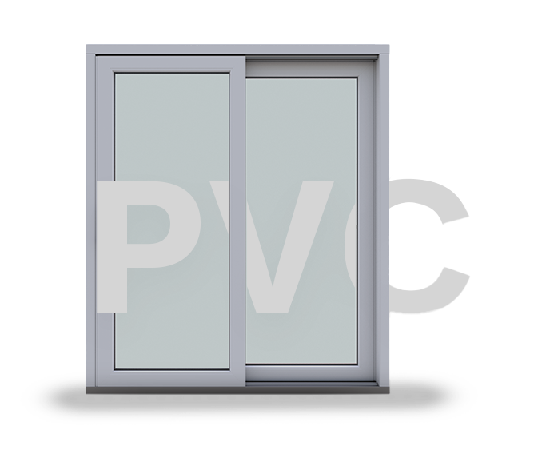
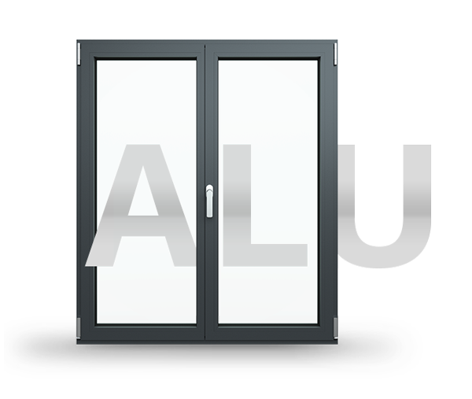
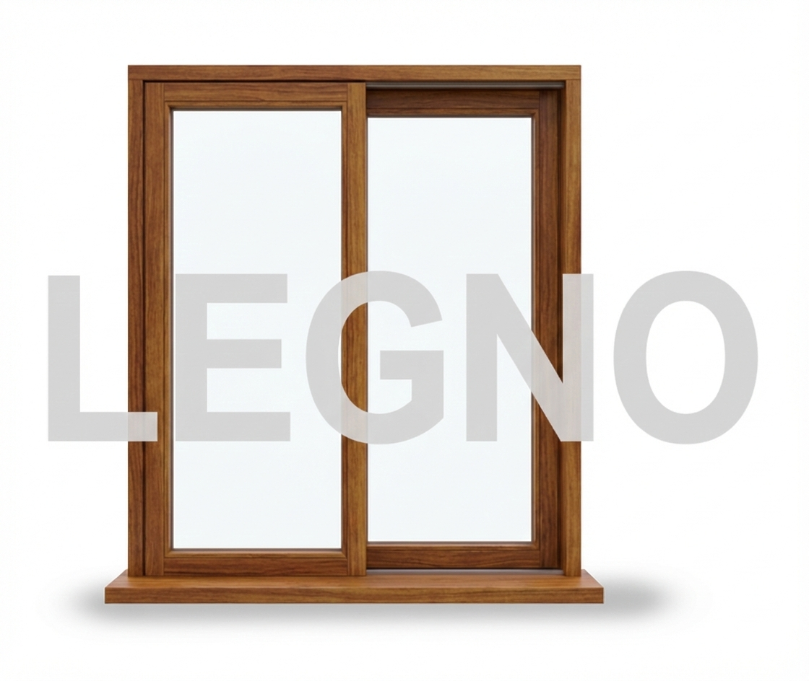
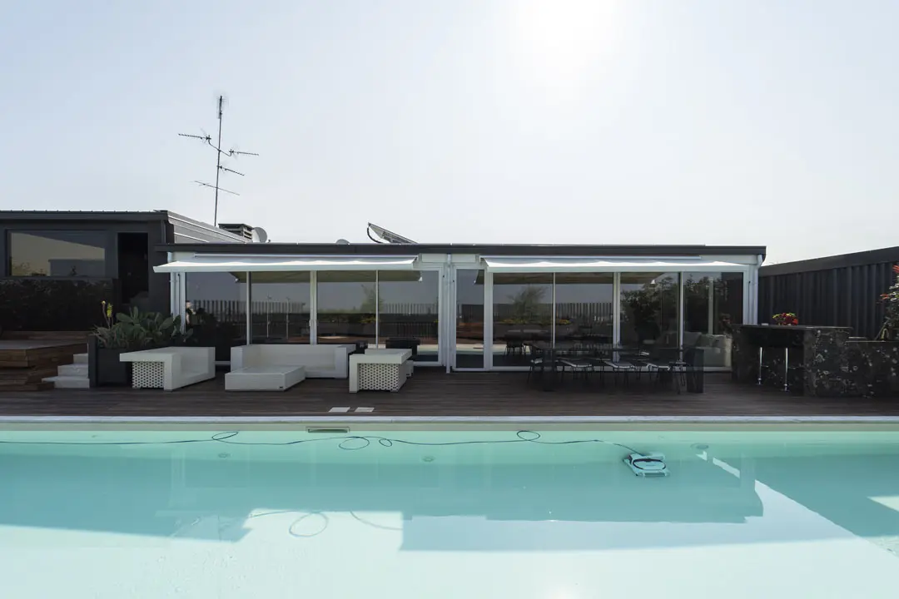
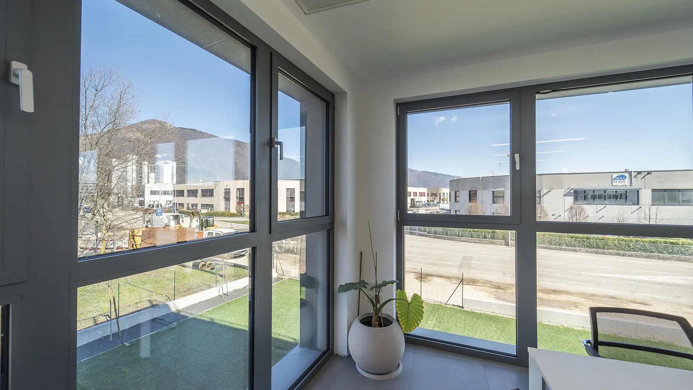
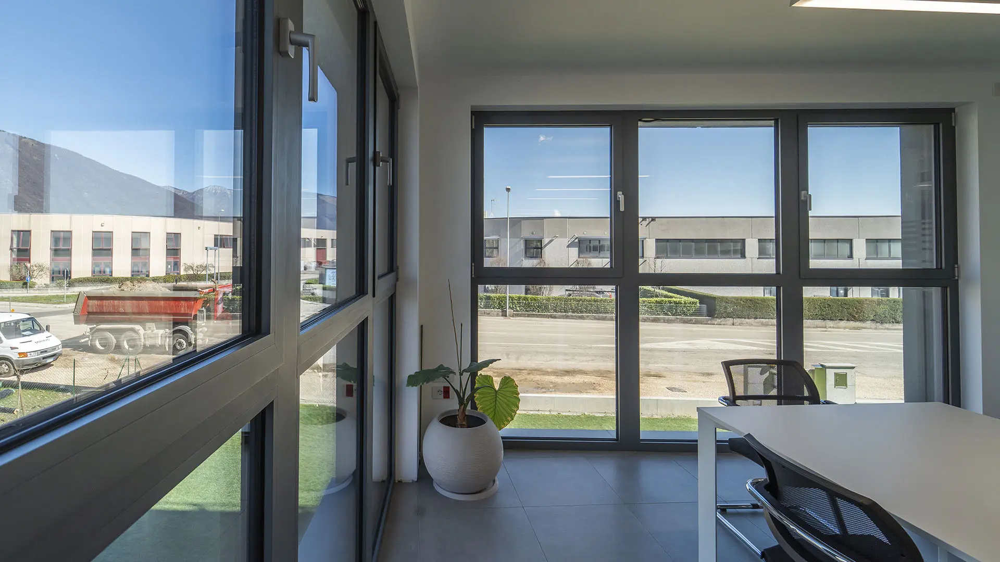
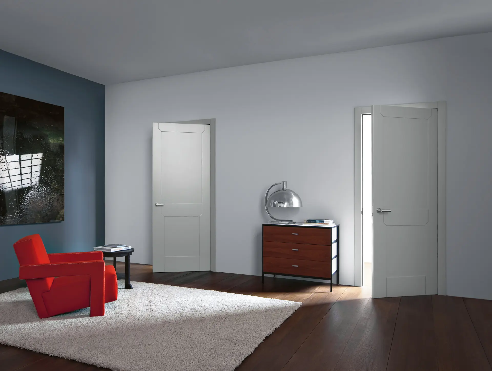

Da Prat — Serramenti su Misura, Spilimbergo (PN)
Funzionalità, design, efficienza energetica e sicurezza: gli ingredienti per il serramento perfetto.

Tre materiali, infinite possibilità

Ottimo isolamento termo-acustico, ampia personalizzazione di colori e formati anche con rivestimento in alluminio. Alta resistenza agli agenti atmosferici e materiale economico.

Risponde alle esigenze di eleganza e design dell'architettura moderna, integrandosi come vero elemento d'arredo. Performance di sicurezza e resistenza a usura e tempo.

Materiale vivo e naturale che conferisce calore, pregio e personalità a porte e finestre. Si integra con naturale armonia come vero elemento d'arredo contemporaneo.Ampiezza, luce e design senza compromessi
 Ottima soluzione per chi cerca praticità e risparmio energetico.
Scorre in modo fluido e silenzioso, con elevato isolamento termico e
acustico. Personalizzabile in colori e finiture.
Ottima soluzione per chi cerca praticità e risparmio energetico.
Scorre in modo fluido e silenzioso, con elevato isolamento termico e
acustico. Personalizzabile in colori e finiture.
 Eleganza e leggerezza per grandi aperture. Il profilo sottile in
alluminio massimizza la superficie vetrata e la luminosità degli
ambienti, con prestazioni di sicurezza elevate.
Eleganza e leggerezza per grandi aperture. Il profilo sottile in
alluminio massimizza la superficie vetrata e la luminosità degli
ambienti, con prestazioni di sicurezza elevate.
 Il massimo delle prestazioni nelle grandi vetrate. Il meccanismo
alzante garantisce una tenuta perfetta in chiusura e uno scorrimento
agevole, ideale per connettere interno ed esterno.
Il massimo delle prestazioni nelle grandi vetrate. Il meccanismo
alzante garantisce una tenuta perfetta in chiusura e uno scorrimento
agevole, ideale per connettere interno ed esterno.
Sicurezza, stile e primo impatto
 Massima protezione antieffrazione con certificazione di sicurezza.
Struttura in acciaio rinforzato con isolamento termico e acustico
integrato. Disponibile in molte finiture esterne.
Massima protezione antieffrazione con certificazione di sicurezza.
Struttura in acciaio rinforzato con isolamento termico e acustico
integrato. Disponibile in molte finiture esterne.
 Design contemporaneo e durata nel tempo. Leggera ma robusta,
resistente agli agenti atmosferici e alla corrosione. Ideale per
abitazioni moderne con grandi superfici vetrate.
Design contemporaneo e durata nel tempo. Leggera ma robusta,
resistente agli agenti atmosferici e alla corrosione. Ideale per
abitazioni moderne con grandi superfici vetrate.
 Calore e prestigio per l'ingresso della tua casa. Il legno massello
conferisce carattere e unicità, lavorabile con intagli e finiture
personalizzate su misura.
Calore e prestigio per l'ingresso della tua casa. Il legno massello
conferisce carattere e unicità, lavorabile con intagli e finiture
personalizzate su misura.

Il tuo progetto, il nostro lavoro
Ogni abitazione è unica. Con Da Prat ricevi una consulenza
personalizzata per scegliere i serramenti perfetti per il tuo
spazio: materiale, colore, apertura, sistemi di sicurezza e
soluzioni d'ombreggiatura.
Vieni a trovarci in showroom o richiedi una visita a domicilio.
Serramenti, porte e sistemi d'ombreggiatura



